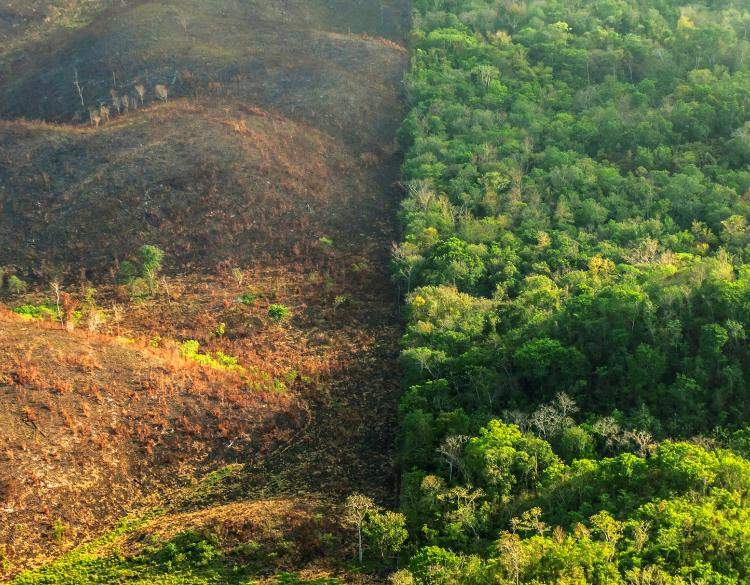
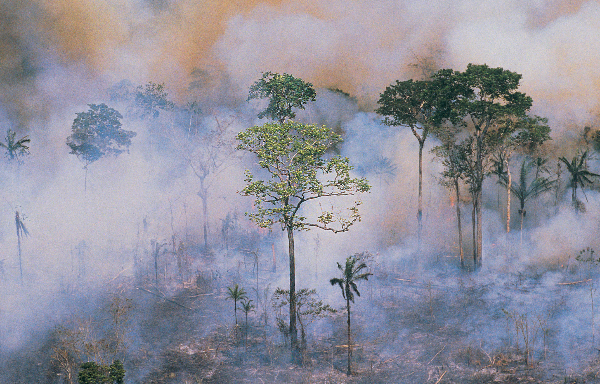
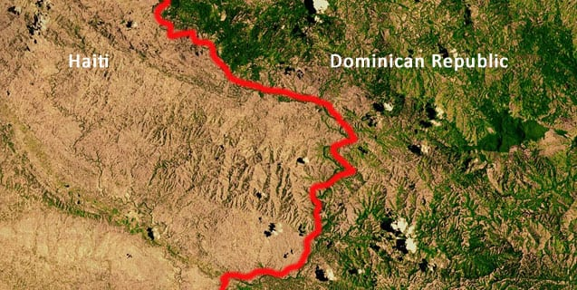
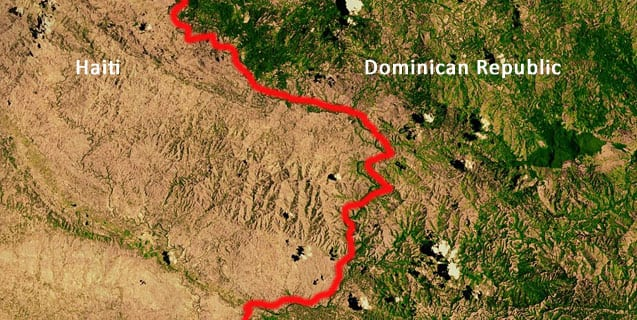

#Example of Deforestation
Humankind began in an extensively forested world. As population increased, different types of deforestation arose.
- Slash-and-Burn Agriculture
- Rainforest Destruction for Commercial Plantations
- Population Pressures on Forests
- Valuable and Endangered Tree Species
- Border Effects of Deforestation
In the humid tropics, indigenous people clear forests by cutting down trees and burning them, called slash-and-burn practices.
High demand for commodities such as soy, wood pulp and palm nut oil leads to forest destruction and replacement with plantations.
A result of population increase is deforestation. One of many examples of deforestation resulting from a population rise in china, which went from about 1.4million people 4000 years ago and over 60 percent forest coverage, to 65 million in 1368 with 26 percent forest coverage.
Tropical rainforests yield hed wood with unusual colors aand grains, such as mahogany, teak and ebony. Greatly in demand for furniture and cabinetry, many tropical trees are now considered endangered species because of population reduction.
Forest destruction threatens the wildlife and people who depend upon its resources.In sumatra and borneo, tigers, rhinoceroses, and orangutans have greatly decreased numbers.
Images of it:
.jpg)
.jpg )
.jpg) 
